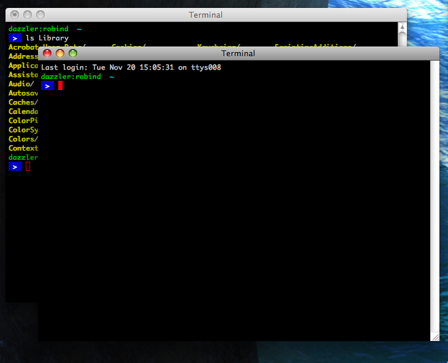
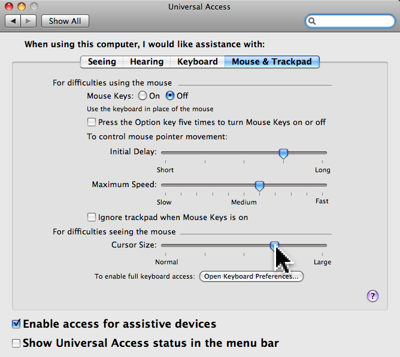

My Mac Gripes
As mentioned before, my experiences with the new Mac haven't all been roses. There have been a few things that haven't worked out real great, and I've even had a few Grey Screens of Death (kernel panics.) I suppose that things like this happen on any computer system, but based on my prior experiences with Mac it kinda surprised me that there isn't a higher level of stability than what I've experienced. After all, this isn't Windows! I shouldn't need to have the "reboot" tool in my arsenal of troubleshooting aids. I have to admit though that if this had been a Windows box I probably would have needed to reboot at least a hundred times as much in the past few weeks than I actually have. But if it had been Linux it probably would have been about a tenth as many times.
However, stability issues aside, there are a few things that really bug me about the Mac and OS X experience, and that is what this article is about. I've been working off and on on this article for several weeks now. During that time I've added some things to the list, and also have removed several as I got used to them and was no longer able to gripe about them.
Given who I am and what I work on it is probably not too surprising that all of these gripes are about basic User Interface issues. I have no gripes at all about functionality or capabilities of the OS or installed software, so that is probably saying a lot about this platform and how well it fulfills my needs for Internet access, software development, and desktop applications. All that's left are a few UI gripes.
Click to activate
It really bugs me that if a window is not in the foreground that I have to click on it once to raise it to the foreground, and then click again to do whatever it was that I wanted to click on in the first place. I guess this means that I am a firm believer in "If I can see it I should be able to click on it." This can sometimes be particularly troubling for me with apps that have multiple windows open, such as switching back and forth between the web browser's main window and a popup window that a site has opened. Another case is the multiple windows of the GIMP. Yes I know it is not a native app, and was designed for another environment, (X-Windows) but the point is that I shouldn't have to click more than once to select a tool from the palette and then click more than once in the image window to start using the tool. The tool palette is obviously getting the mouse move events even when it is not the active window since the tool buttons are being highlighted as you mouse over, why can't it get the mouse click events too!?
The really annoying thing about click to activate though is that it is not consistent. Somewhere along the line somebody in Cupertino decided that things like the title bar gumdrops, tools on native toolbars, (but if the application uses a non-native toolbar you are out of luck,) and the play/stop/etc. buttons on a miniview iTunes should be able to respond to a single click even if the window is not the foreground window. This means that I have to pay more attention than should be needed every time I click to make sure that the click actually got sent to the window.
Can only resize from 1 corner
It bugs me that I can only resize windows from the lower right corner. I often find myself wishing that I could resize from any edge or corner as I've been doing for nearly 20 years on every Windows, OS/2 and X-Windows system I've ever used.
Borderless windows
When you take away the ability to resize from any edge of the window then you don't need to keep the borders either, but this leads to other problems. I tend to use wallpaper images that are relatively dark so as to not detract too much from my work. I also like to have a black background on my Terminal windows. However this means that when two Terminal windows are overlapping there is no visual indicator at all to tell you where one window ends in the overlap area and another begins. A simple border on the windows would help a lot in these situations, (and would also provide something to grab with the mouse for resizing!)

Menu Mnemonics
I can live with the shared menu bar at the top of the screen, and have even started to like it, but I really miss menu mnemonics. Those are the underlined letters in the menu item's label that let you activate a drop-down menu, and select items within the menu, all without using the mouse. Sure, the accelerator keys (the key sequences that are usually listed on the right side of a menu item) help a lot but not all menu items have them, and other than the standard accelerators how are you supposed to learn what they are if your mouse is broken and you can't access the menu bar at all? Hmmm? Of course if your mouse is broken then that leaves a particular finger free to wave towards 1 Infinite Loop if you happen to feel inclined to do so.
{kind=link}
Can't change caption bar colors
In the past I've always configured my system to make the caption bar (or title bar) of the active window use a color that is very easily distinguished from the other open windows on the screen. For example, I would typically have my system configured such that the caption of foreground windows were painted a vibrant blue or purple, and the other windows would use a dull grey. When you have literally dozens of windows open at once across several screens then this makes it very easy to take a quick glance and know exactly where you are and what you are working on.
Up until recently Apple's approach has been to use almost the same caption color for foreground and background windows, with the only real difference between them being that the gumdrops would have color on the front window no color on the rest, and also if the application uses native widgets then they will be dimmed when the window is not the foreground window. Starting with Leopard (OS X 10.5) Apple has made the caption bar on the foreground window be a darker shade of grey, but IMHO it is not enough to give you the nice quick-glance-with-dozens-of-windows usability. And they still don't let you set the color to something that you prefer.
Can't change mouse cursor
You'd think that with how important the visual appeal of the OS seems to be with Apple that they would not have let something this ugly slide through their QA department for so long. Since I usually have multiple computers with multiple screens active at once, I like to increase the size of the mouse cursor a bit, or replace it with alternate cursors that are more easily visible. I've tried options for things like giving the cursor a comet trail of fading arrows behind it, or what not, and I hate them all after a few minutes. For me, just increasing the size and/or using a colored arrow that is easily visible does the job and doesn't get in the way of my work. However on Mac OS X you can't use custom cursors and all you can do is scale the image up in the Universal Access section of System Preferences. And being Apple you might assume that it would be a nice scaled up anti-aliased rendering of a vector image, but NO! They simply take the original 16x16 pixel image and stretch it to fit the new 64x64 or whatever size. Anyone who has used a photo editing application more than a few times knows you can't take a small image and enlarge it very much without it looking like crap! It embarrasses me too much to run a Mac with a cursor stretched up to a monstrosity like that, so I suffer with the itty-bitty one that occasionally gets lost among the dozens of windows on my desktops.

Select and middle button paste
This one isn't really a gripe, but just a missed feature. On X-Windows based systems there are multiple clipboard-like things available. In addition to the one that you use with the normal cut, copy and paste menu items, there is a clipboard called the "Primary Selection." Whenever you select some text with the mouse that text is automatically copied into the Primary Selection without any extra work on your part. No need to use a menu, toolbar tool, or a accelerator key to get it there. If the application is written properly then that text does not interfere with the main clipboard at all. Then when you click the middle mouse button that text is automatically pasted into the clicked application at the point where the cursor was located when you clicked the mouse. I never realized how much I used this feature and how second nature it has become until I wasn't able to do it any longer. I keep forgetting to hit the copy key and trying to middle click to get the text I selected in another app. Luckily iTerm and Emacs can be configured to work with select and middle-click.